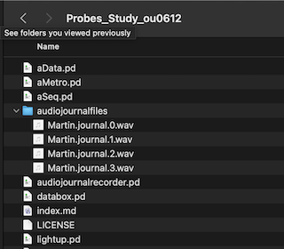

Technology Probes Study on Programming by Playing (Study OU-0612)
You have reached this page because you have expressed an interest in participating in my study. Thank you!
Launch PureData. Open file MAINPATCH_study0612.pd
Once the patch is open, go to Media-> Test Audio and MIDI Settings, check that you have audio input and output working
In the patch, find the audio recorder. Click on the box that says "yourID", type in your participant ID (e.g. P001) and hit enter. Then click on the Record button and say something. Press stop.
On your computer, locate the folder that you unzipped with the study patches. Inside it find the audiojournalfiles folder. It should contain some new audio files. If they are there, the recording worked, but do listen to them to check that they contain a clear sound of your voice.
